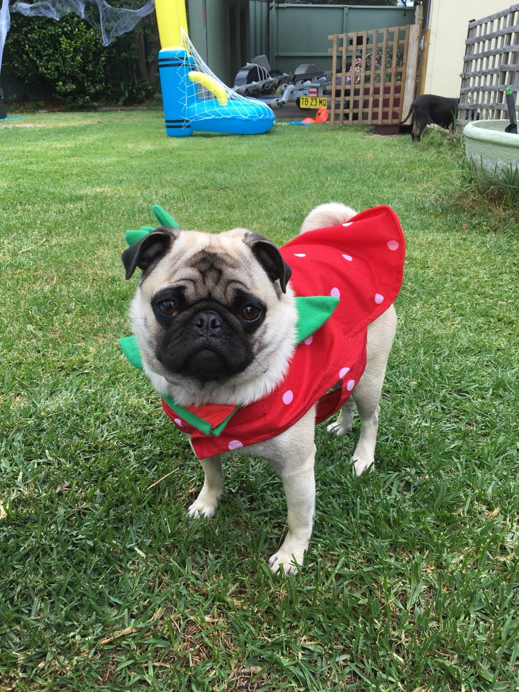
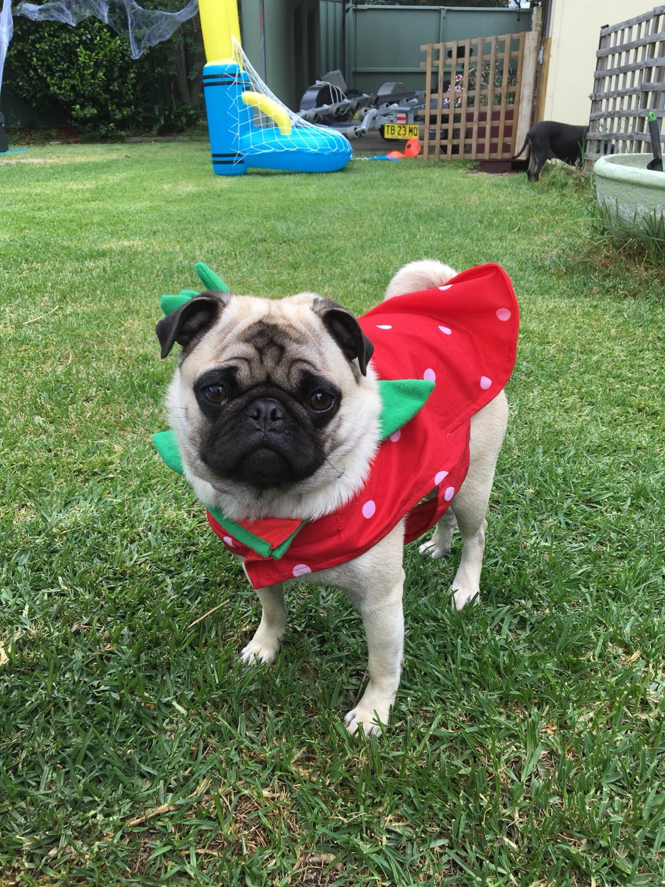
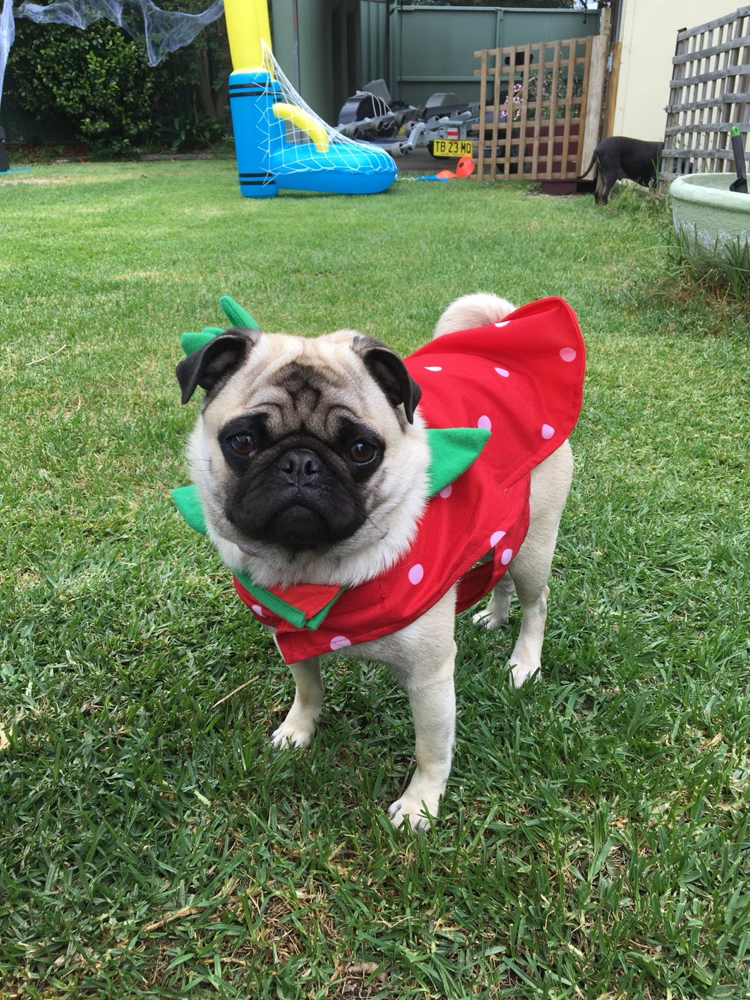

Ariel is a 9 year old pug who has a penchant passion for wearing outfits.... and looking fabulous!

1. She was born on the Sunshine Coast in Queensland, Australia.
2. Her favourite foods is are bacon, roast chicken, steak, and mini cheddars.
3. She is lazy!
4. She is the worst guard dog ever... sleeping right through a break-in!
5. She loves basking in the sunshine.